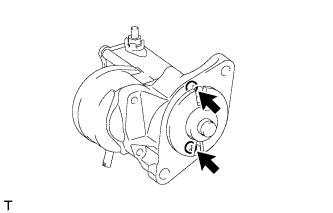
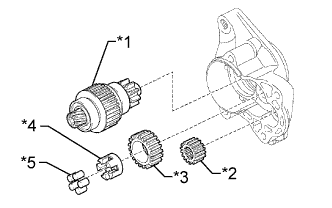
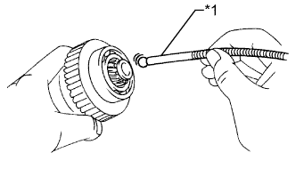
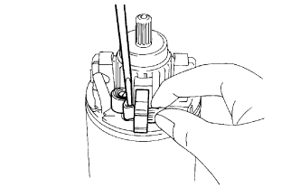
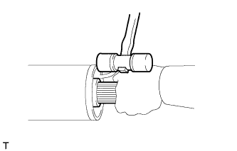

СТАРТЕР > РАЗБОРКА |
| 1. REMOVE STARTER YOKE ASSEMBLY |
Remove the screw and terminal 50 wire.
 |
Remove the nut and disconnect the terminal C wire.
| *1 | Terminal C |
Remove the 2 through bolts and O-rings and pull out the starter yoke with the armature.
| 2. REMOVE MAGNET STARTER SWITCH ASSEMBLY |
|  |
Remove the 2 screws and magnet starter switch.
Remove the return spring.
|  |
Remove the starter clutch, starter armature pinion, starter idle pinion, retainer and clutch roller from the starter drive housing.
| *1 | Starter Clutch |
| *2 | Starter Armature Pinion |
| *3 | Starter Idle Pinion |
| *4 | Retainer |
| *5 | Clutch Roller |
|  |
Using a magnet hand, remove the steel ball from the clutch shaft hole.
| *1 | Magnet Hand |
| 3. REMOVE STARTER BRUSH HOLDER ASSEMBLY |
|  |
Disconnect the 4 brushes from the starter brush holder.
Using a screwdriver, hold back the brush spring.
Disconnect the brush from the starter brush holder.
Remove the starter brush holder.
| 4. REMOVE STARTER ARMATURE ASSEMBLY |
|  |
Using a plastic-faced hammer, tap the end of the starter yoke and remove the starter armature.